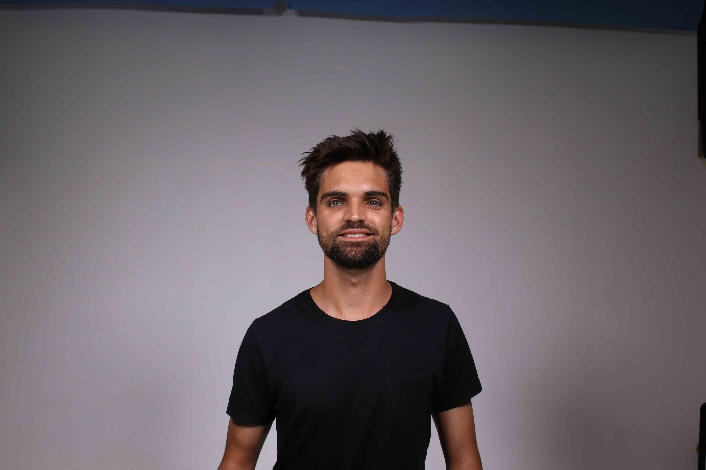
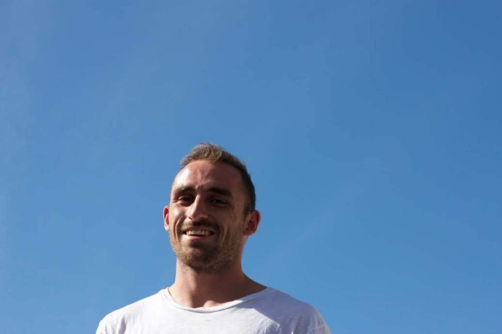
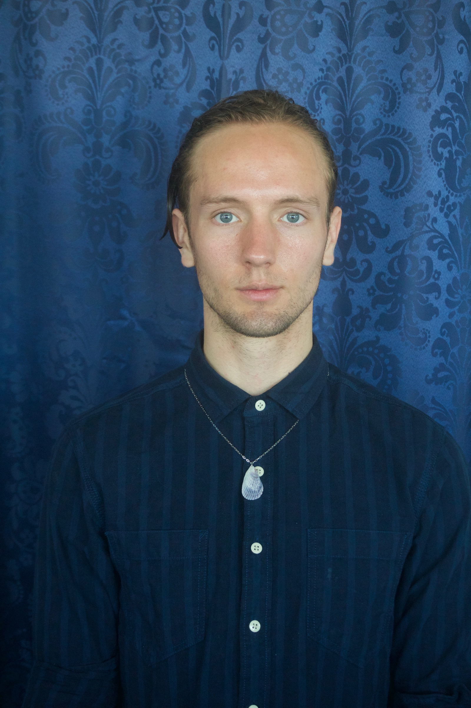
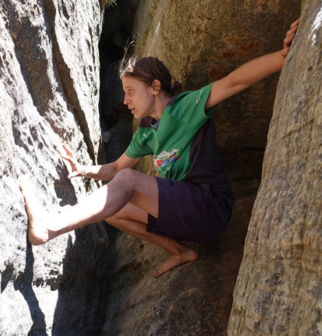
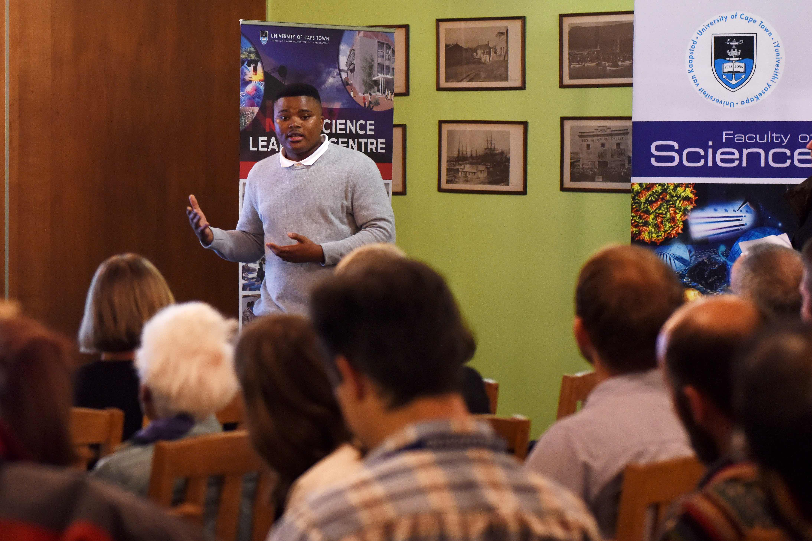
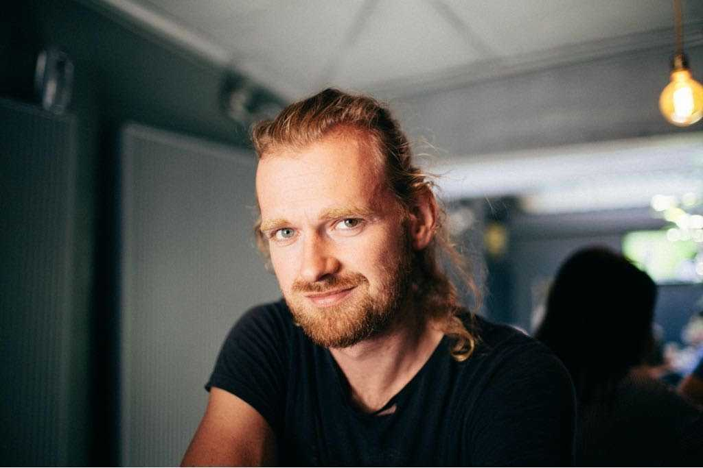
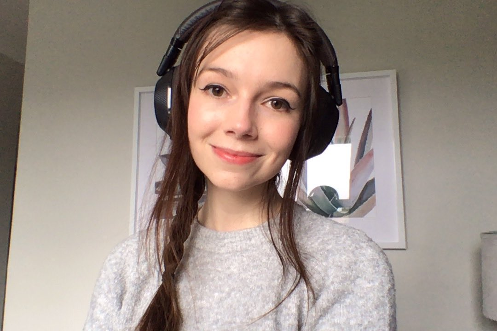
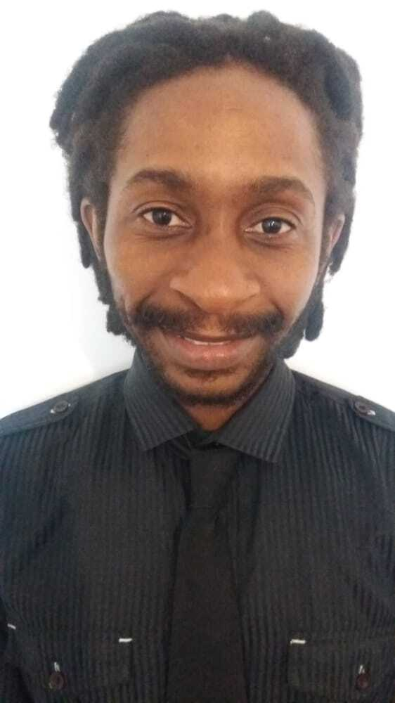
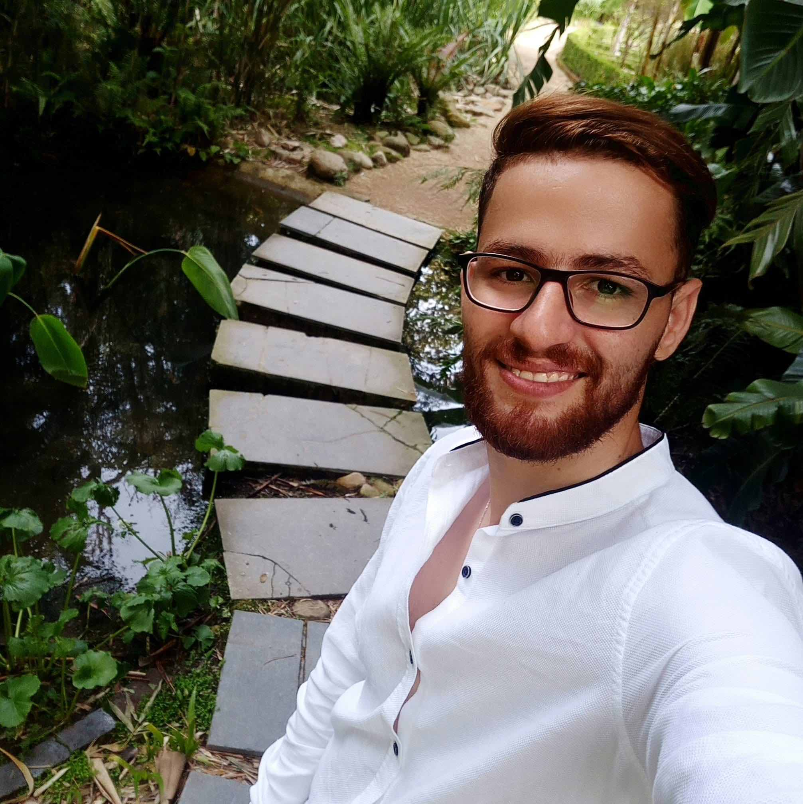
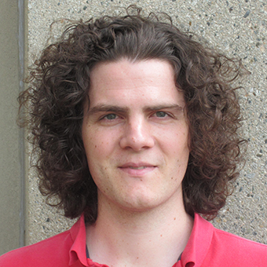

Students
Current Students
Third year students
Jordan (joint with Jan Buys) - Natural Language Processing
Justin (joint with Jan Buys) - Natural Language Processing
Kaitlyn Sparks - SNN
Honours students
Siphelele Danisa
Megan Cole - Spiking Neural Networks
St John Grimbly

Jeremy Du Plessis

Claude Formanek

Abram Schönfeldt
AIMS essay students Masters students

Lizelle Niit - Reinforcement Learning and Computational Psychiatry

Mashudu Mokhithi (joint supervised with Anita Cambell and Claire Blackman)- Mindset and mathematics pedagogy
Introduction to Complex Numbers, M. Mokhithi and J. Shock - From In Introduction to University Level Mathematics for a South African Audience - The relationship between mindset and academic achievement at university: A quantitative study of South African students , A. Cambell, M. Mokhithi, J.Shock - WEEF GEDC
Daniel Taylor (joint supervised with Deshen Moodly) - Saliency mapping and brain aging
Tom Makkink (joint supervised with Instadeep )
Thesis: Transformers in RL
A game-theoretic analysis of networked system control for common-pool resource management using multi-agent reinforcement learning - ArXiv:2010.07777 , NeurIPS 2020

Dean Rance
SNN's and evolving learning rules for RL
PhD students

Emma Platts (joint supervised with Amanda Weltman)
Anthony Sayster (joint supervised with Duncan Makhure)

Rorisang Sitoboli (joint supervised with Katie Cole - part of the MeASUREe group ) - PEPT and machine learning
Ruach Slayen (joint supervised with Jeff Murugan)
Graduated students
AIMS essay students

Yasser Salah Eddine Bouchareb - (Joint supervised with Adam West)
Al Zahraa Farrag - Information geometry (2014)
Mohammad Mansour - knots of light (2015)
Morris Munyoka - Image segmentation for medical imaging
Reinforcement learning -->
Linda Agyapomah Osei - Agyare - A survey of Reinforcement Learning algorithms
Roger Jeasy Bavibidila - Random Network Distillation and curiosity in Reinforcement Learning
Grace Ikhizama- Applications of machine learning in healthcare
Third years
Jeremy Du Plessis - Curiosity driven reinforcement learning
Siphelele Danisa - An Investigation into the Balance Between Exploration and Exploitation in Reinforcement Learning
Kabelo Serage
Taejun Park (Joint supervised with Juana Sanchez-Ortega) - Basics of Lie Algebra and Representation Theory
Robert Spencer (Joint supervised with Jeff Murugan) - physics of hanging strings
Tslil Clingman (Joint supervised with Jeff Murugan) - information geometry
Lizelle Niit - models of action potentials
Sam Wolski - The quantum Hall Effect
Cara Pienaar - information geometry
Kyle Levin - information geometry
Dylan Nelson (Joint supervised with Jeff Murugan) - Minimal surfaces in hyperbolic space
Chris Finlay - Deep learning and facial recognition
Ryan Le Roux - Hawking Radiation
Christoffel Goosen - Information Geometry
Dimakatso Rapotu - Quantising the open string
Jean-Jacques Du Plessis - Quantum computation and quantum information
Sithembiso Mashinini - Quantum computation and quantum information
Mita Ramabulana - Quantum computation and quantum information
Quincy Mmako - Image segmentation
Duncan Robertson - topological data analysis
Dumisani Zitha - Quantum computation - Shor's algorithm
Honours
Sabina Stefan
Robert Spencer - tensor networks
Lauren Denny - tensor networks
Tslil Clingman - information geometry
Emma Platts - information geometry
Lizelle Niit - The avian compass
Dean Rance
Dean Rance - Maximization of information transfer in neural channels
Cara Pienaar - Differential equation models for malaria: sensitivity to model formulation
Dominic Bauer - Recommender systems
Luke Taylor
Jason Connie - quantum information theory
Darien Hillebrand - GANs
Daniel Taylor
Logan Guildenhuys - the universal function approximation theorem
Jibran Bodra - (Joint supervised with Tom Dietel) - ANNs and particle data
Jeremy Wilkinson - (Joint supervised with Tom Dietel) - ANNs and particle data
Masters
Alex Antrobus (joint supervised with George Ellis and Jeff Murugan)
Tslil Clingman (joint supervised with Jeff Murugan)

Alastair Grant-Stuart (joint supervised with Jeff Murugan)
Alexes Mes (joint supervised with Will Horowitz)
Ruach Slayen (joint supervised with Jeff Murugan)
Jean-Gabriel (joint supervised with Jeff Murugan) - quantum chaos
Vladimir Makic (joint supervised with Henri Laurie) - Rhino/poacher dynamics
PhD
Justine Tarrant (joint supervised with Jeff Murugan)